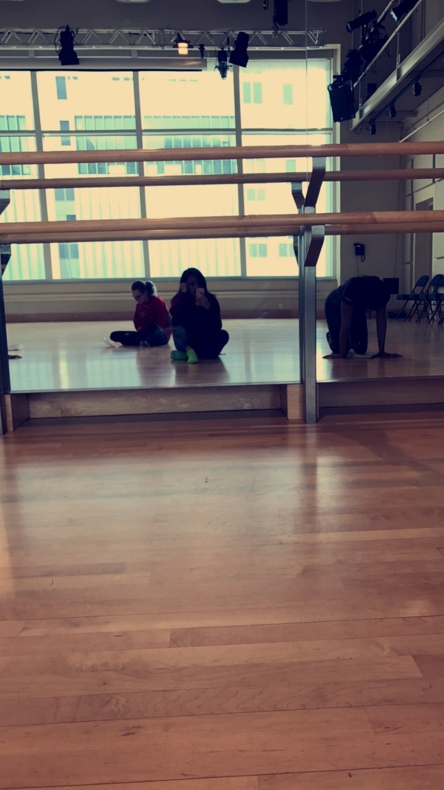
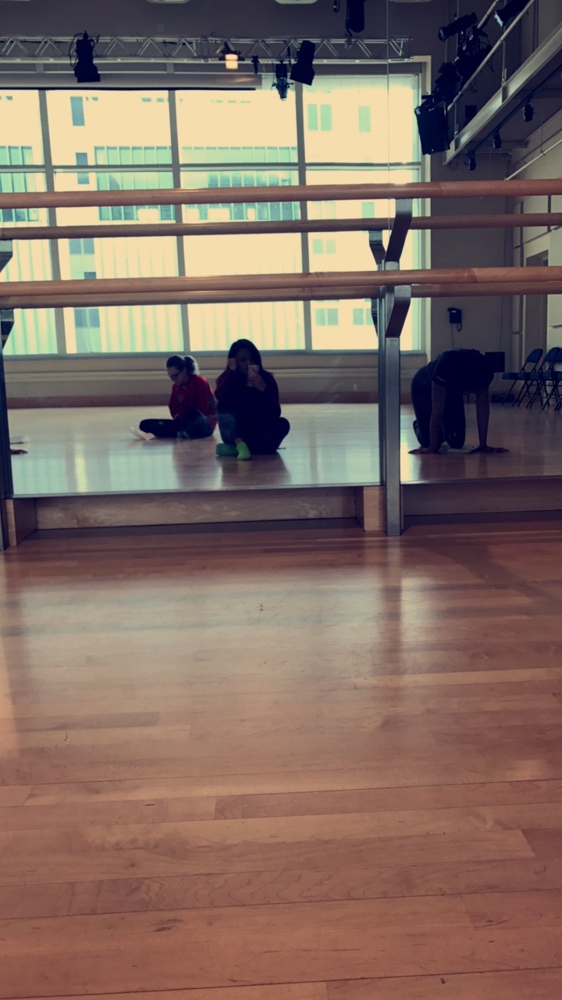

What is Atrophic Kidney ?
The kidneys are two bean-shaped organs in the renal system.
They help the body pass waste as urine.
They also help filter blood before sending it back to the heart.


Hip-hop dance refers to street dance styles primarily performed to hip-hop music or that have evolved as part of hip-hop culture. It includes a wide range of styles primarily breaking, locking, and popping which were created in the 1970s and made popular by dance crews in the United States.

 
